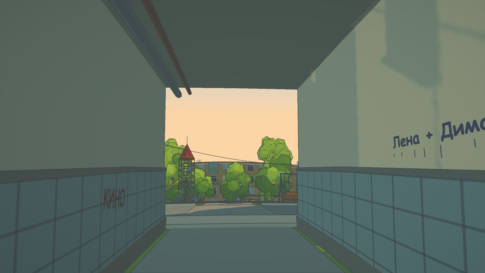
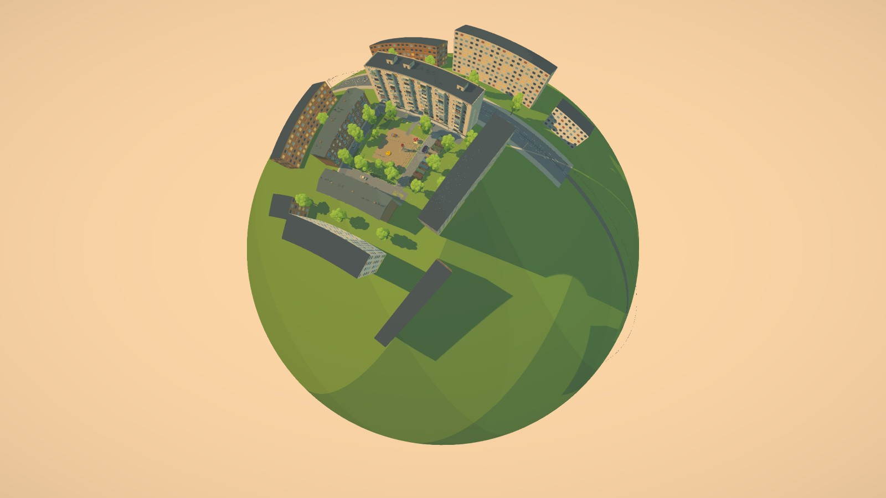
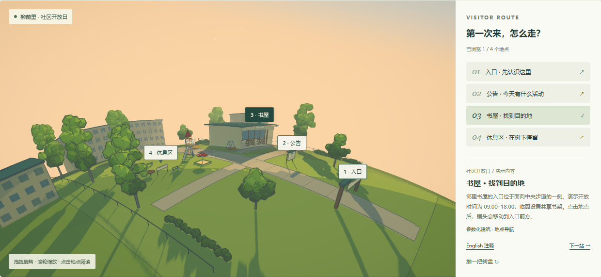
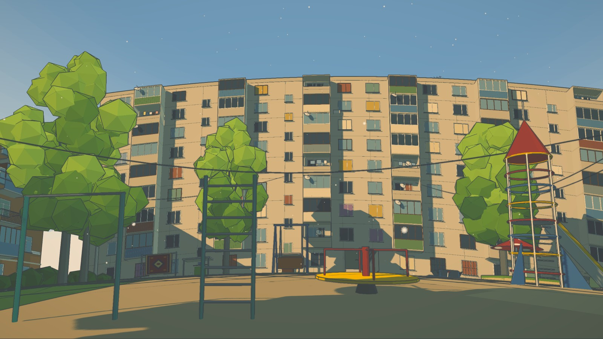
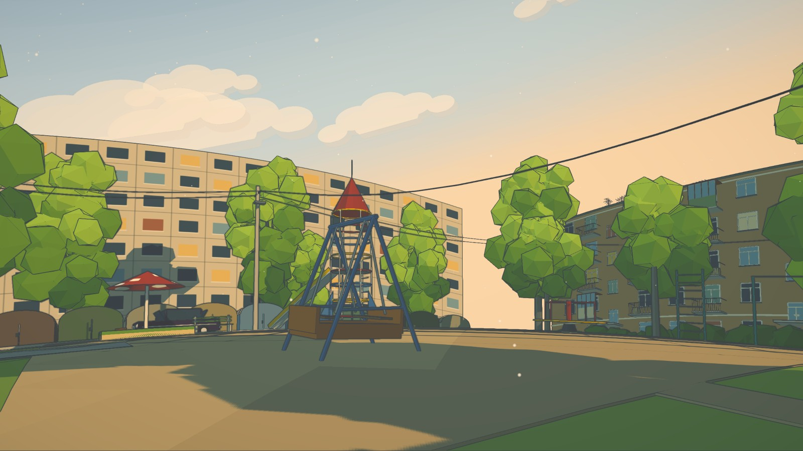
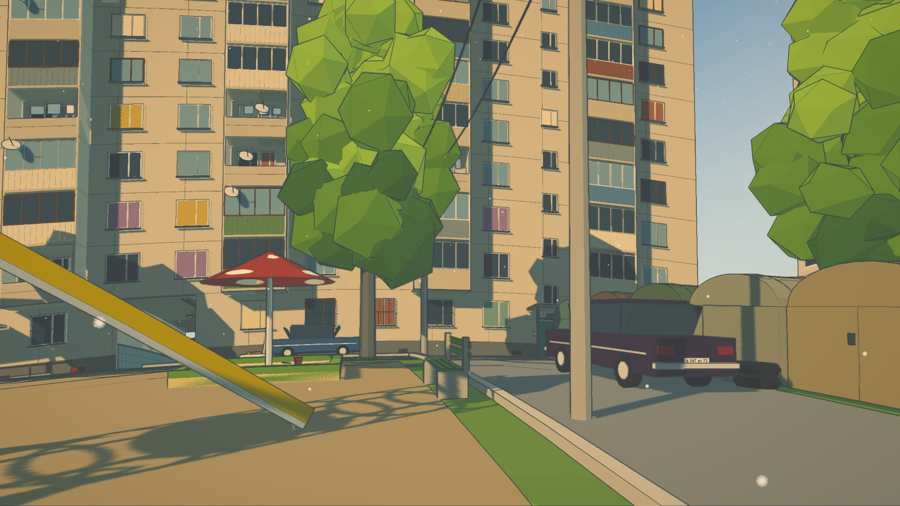
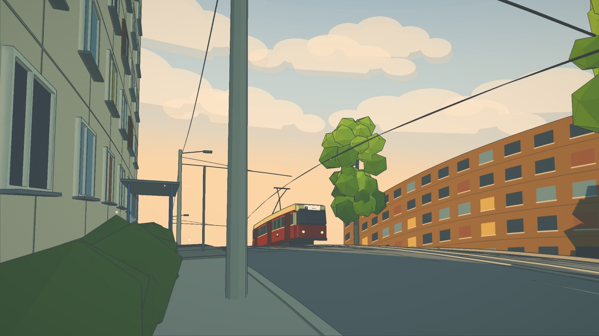

004 / GITHUB 项目研究 · 知识全景图
2026.10.09DVOR一张图读懂风格化世界
能力 · 渲染原理 · 世界搭建 · 效果复用 · 提示词控制
浏览器中的可漫游 3D 作品源码。模型与纹理由代码生成，布局、构图和叙事由作者设计。



原作描绘想象中的 2001 年后苏联庭院；本地“柳荫里”是虚构社区，用来演示实际访客任务。上方场景均为已有真实截图，按图稿等比例裁切。
库的能力是什么？
原作能力自由漫游鼠标 + WASD，跑步、碰撞与台阶
空间注释按 E 读取预设翻译与文化背景
环境互动设施动画、杨絮、电车运行与停靠
球面世界近景行走与小行星远景
风格管线卡通明暗、描边、冷暖与空气透视
提供可改造源码。当前是完整作品，不具备通用场景编辑器；轻量控制与完整游戏引擎的范围不同。
能做出哪些效果？
手绘动画背景观感：明确体块、大块明暗、冷影暖光、细轮廓、远景层次、生活纹理。




六张图均为上游截图。观感来自造型、配色、布局与渲染共同作用。
风格怎样渲染？
Three.js · WebGLCanvas 纹理形体 / 色彩 / 标识
阴影偏色 + 雾场景材质阶段
纹理离屏渲染
雾在场景阶段处理；色带与阴影偏色的 Shader 补丁依赖 Three.js 版本。造型与构图仍是最终风格的重要输入。
世界怎样搭建？
代码生成部件 · 作者编排世界① 基础积木
盒体、圆柱、管道、曲线、贴图平面
② 参数化部件
窗户重复、树冠种子、Canvas2D 文字
③ 人工布局
物件坐标、初始镜头、地点叙事
④ 运行数据
碰撞体、高度面、热点、更新回调
⑤ 球面投影
平面 XZ 映射到球面，动画保留局部坐标
Batch 合并静态几何；InstancedMesh 复用树冠。核心世界不依赖预制 glTF。种子使局部差异可复现。
玩家碰撞与高度查询仍在平面 XZ；相机显示球面位置和方向。改布局时需同步碰撞、热点与镜头。
我们已完成的实际扩展
本地验证“柳荫里社区开放日” · 第一次到访社区
新建几何：入口、书屋、公告板、步道、围栏与住宅。
真实交互：四站导览、地点点击、镜头定位、中英说明、漫游与设施互动。
风格实验：三套预设、2–5 档明暗、太阳高度、阴影色、描边、雾、杨絮。
参数复用：浏览器保存 + JSON 导出；当前没有 JSON 导入按钮。
社区名称、布局与活动为演示数据。现有场景复用了上游模块；风格参数保存不包含世界布局。
可复用的是哪些模块？
toon + palette统一材质、色带与配色
Pipeline深度描边、调色与抗锯齿
Batch + decal参数化建模与标牌
planet平面到球面的空间映射
nature树木、灌木与杨絮
yard + player设施动画、漫游与碰撞
地点数据 + 注释导览镜头、多语言内容
移植时同步碰撞、热点、相机、场景尺度与 Three.js 兼容；静态几何合并后修改部件通常需要重建批次。
使用场景与可扩展方向
基于源码与实验的推导应用场景
城市记忆与文化展览 · 社区 / 校园导览语言学习与空间叙事 · 品牌体验与风格原型
未来可扩展
真实场地数据 / 内容编辑 / 多语言与语音 / 任务进度glTF 导入 / 布局编辑 / 触屏与无障碍LOD / 分区加载 / 性能分档
上述是产品方向建议，并非上游已有功能。真实导览需验证空间准确性、通行条件和内容维护机制。
不参考原作，如何用提示词控制？
独立创作方法把审美要求写成可执行规格，再用实际截图校准。
保留镜头和布局，只抬亮暗部并改成蓝绿色；输出同镜头对比。
网页已提供两类完整模板、编辑 / 复制 / TXT 下载，以及实验区当前参数带入。
提示词规定方向；描边、雾距离和暖度需按工程重新标定，实际结果以截图为准。
轻量碰撞；桌面键鼠优先；翻译为预设内容；基线无完整物理、多人、任务系统与场景编辑器。需要 WebGL，尚无跨硬件性能保证。